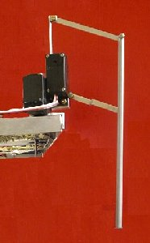
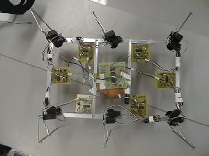
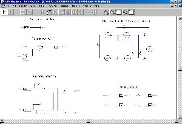
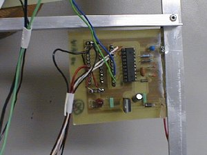

Construction
Structure
Nous voulions réaliser un robot totalement autonome (énergie et commande) se déplaçant sur 6 pattes.
Il devait pouvoir marcher en ligne droite mais être suffisament flexible pour, en changeant de programme
, être capable de tourmer, monter, éviter des obstacles ...
Pour celà les 6 pattes devaient être indépendantes.
Pattes

Deux systèmes de patte étaient possibles : soit une patte en une seule partie, commandée par un
seul servomoteur, et qui ne se soulève pas, soit une patte en parallélogramme.
La deuxième possibilité nous parut meilleure car elle avait l'avantage d'avoir deux degrés de
liberté permettant des mouvements plus complexes.
Partie opérative
Alimentation en énergie :
Batteries rechargeables de 7,5 volts embarquées.
Actionneurs :
Servomoteurs : asservis en position, compacts et faciles à commander
par un signal rectangulaire à rapport cyclique variable.
Partie commande

On choisit des microcontrôlleurs (puce programmable) : 1 gros central qui coordonne 6 autres plus petits.(Un par patte)
Les petits se chargent de générer les signaux de commande requis par les servomoteurs.
Programmation

A la base un microcontrôleur se programme en assembleur par l'intermédiaire d'un PC.
Mais ce langage très proche des instructions de la machine est difficile à utiliser même pour
faire des programmes aussi simples que les nôtres.
C'est pourquoi nous avons utilisé un logiciel permettant de traduire
un schéma électronique comportant des oscillateurs, timers et autres portes logiques.
Ce logiciel spécifique aux ST6XX s'appelle ST6-Realizer et tourne sous Windows.
Evolutions

Notre insecte doit évoluer et être amélioré par d'autres groupes dans les années à venir car i
l est encore extrèmement bête et maladroit.
Les microcontrôleurs que nous utilisons ont encore de grandes capacités.
Notre insecte pourrait peut-être franchir des obstacles, les contourner ou les enjamber.
Cela demande un mode de détection (capteurs) et un système d'asservissement.
Il en est de même pour la coordination des pattes sur un sol en relief.
Pour franchir des obstacles ou simplement le faire bouger de façon
plus rapide et plus élégante, on pourrait envisager de changer le programme en s'inspirant de
la démarche d'insectes.
On pourrait peut-être chercher de nouveaux microcontrôleurs avec des sorties P.W.M.
(Pulse Width Modulation), adaptées pour délivrer des signaux carrés dissymétriques plus stables.
De toute façons il faudra refaire un strucure de pattes plus solide et une protection
des parties électroniques du robot.